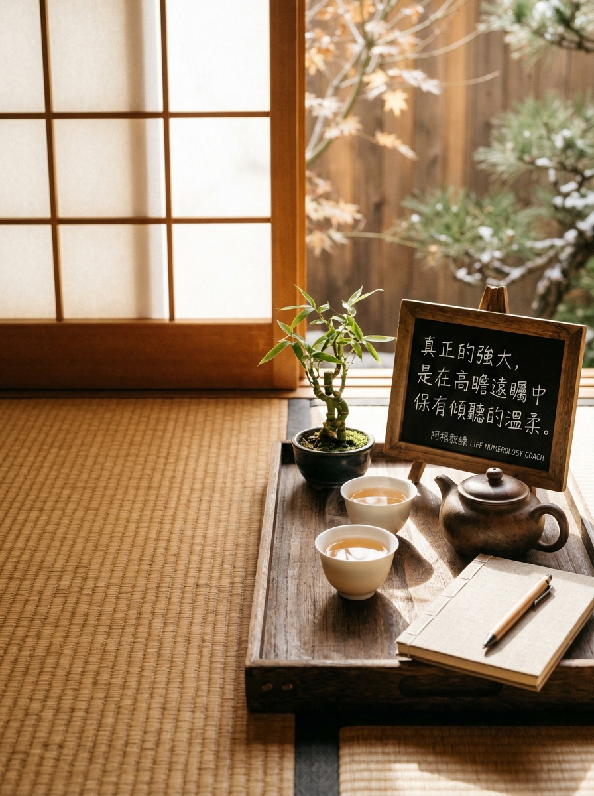

NOVEMBER 17 · VISIONARY STRENGTH & GENTLE HARMONY
11/17 壽星
生日快樂
「真正的強大，是在高瞻遠矚中依然保有傾聽的溫柔。」
生日數 17（內7 外1 合8：遠見・魄力・豐盛）
2026 流年 2（傾聽・合作・柔和・陪伴）
生日數能量：遠見・魄力・豐盛・承擔
流年 2 主題：傾聽・合作・柔和・陪伴
A YEAR OF HARMONIOUS PARTNERSHIP & DEEP LISTENING
在強大掌舵的魄力中注入溫潤傾聽，與夥伴共創長遠豐盛
迎向 2026 流年 2 的合作協調週期，宇宙想為兼具深邃遠見（7）與開創霸氣（1）、合為大格局領袖（8）的 17/8 號人添上一抹溫柔：你天生具備看穿全局的戰略眼光與超強執行力，習慣凡事親力親為、快刀斬亂麻；然而今年最能助你登頂的關鍵不是單打獨鬥，而是「放慢腳步、溫柔傾聽」。當你願意卸下防備、細膩體察夥伴的感受，以柔克剛的協調力將為你凝聚最堅不可摧的團隊力量。
年度提問｜「在急著給出解決方案之前，我能不能先安靜下來，好好聽聽身邊人內心真正的感受？」
YOUR ENERGY DJ · 8 號人的流年 2 溫潤點播站
當高瞻遠矚的 8 號強者，走進溫柔共鳴的流年 2
身為天生的決策者與掌舵手，走進「流年 2」的慢節奏，這不是拖慢你的效率，而是讓你的王國更有溫度！今天 DJ 特別為你調配流年 2 傾聽陪伴歌單——「降緊繃、學傾聽、並肩同行」，讓剛毅魄力化為春風化雨的影響力！
LIFE NUMBER 2 · CLASSROOM PLAYLIST
2 號人課堂激勵與歡唱歌單（給 8 號人的流年 2 能量歌單）
這份歌單來自阿福教練生命靈數課堂中，專為流年 2 主題（傾聽・合作・柔和・陪伴）所調配的經典曲目。點擊任一曲目即可開啟 YouTube 搜尋聆聽，陪伴你在新的一歲調頻對齊、綻放光芒！
- 01溫柔五月天｜關係開場・學習傾聽與尊重，同理接納對方的節奏（YouTube 搜尋）
- 02姊妹張惠妹｜真摯陪伴・無條件的信任與溫暖相挺（YouTube 搜尋）
- 03朋友周華健｜深厚情誼・彼此照顧的可靠夥伴力量（YouTube 搜尋）
- 04家後江蕙｜默默守護・不求回報的深情付出與責任（YouTube 搜尋）
- 05魚仔盧廣仲｜在乎的人・思念與關心化為具體暖心問候（YouTube 搜尋）
- 06祝福張學友｜真情祝福・把守護的心意化為前進支持（YouTube 搜尋）
- 07奉獻蘇芮｜肯定價值・看見自己為團隊帶來的溫柔力量（YouTube 搜尋）
- 08明天會更好群星｜攜手共好・用溫柔陪伴創造彼此的美好未來（YouTube 搜尋）
歌單依《生命靈數2號人_激勵九首與歡唱點播歌單》整理。點播連結均為 YouTube 官方影音搜尋結果；播放時請依授課場地與著作權規範使用。
願你的剛毅長出溫潤的翅膀，在真摯相伴與並肩同行中，收穫雙倍的豐盛與幸福。
👉 11/17 壽星快來留言【🍵】！為新的一歲許下最棒的心願！
#11月17日生日快樂 #生命靈數 #生日數17 #生日數8 #流年2 #溫柔傾聽 #並肩同行 #阿福教練